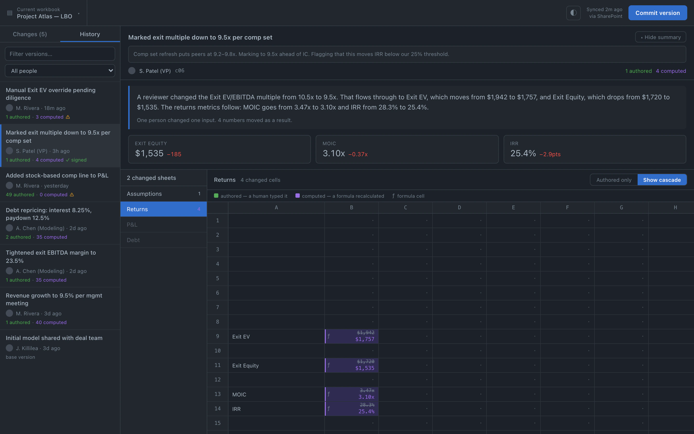
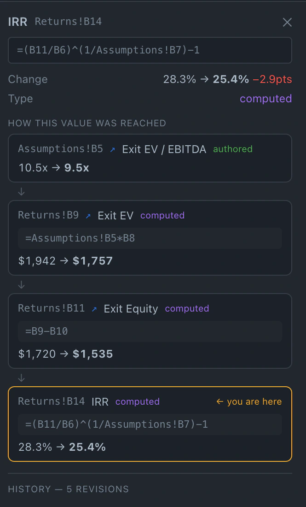
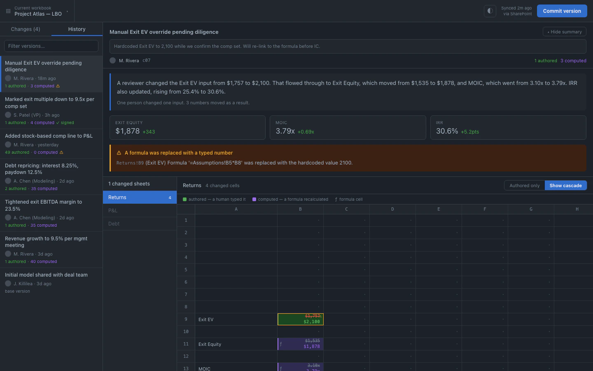

Authored vs computed
The core split. Three real edits surfaced above four thousand recalculations, every time.
Argus diffs two Excel workbooks and separates the handful of inputs a human actually typed from the hundreds of cells that moved as a consequence. No more scrolling four thousand highlighted rows looking for the one that mattered.
Universal build, Apple Silicon and Intel. macOS will ask you to approve it on first open — it isn't notarised yet, so see how to open it ↗.
Prefer the terminal? Grab the CLI and daemon ↘

One authored edit on the Assumptions sheet. Four recalculated cells on Returns, each marked computed — nobody typed them.
Change a single discount rate and Excel quietly repaints half the model. Every existing diff tool shows you all of it, flat, with no way to tell a decision apart from its consequences.
Argus never recomputes a formula. It reads the values Excel already stored, so what you see is exactly what the workbook said — not our interpretation of it.
Every formula is parsed into a cross-sheet graph of what depends on what, including references that hop between tabs.
A cell whose value moved but whose formula didn't was recalculated. A cell a human retyped was authored. That single distinction is the whole product.
From each authored edit, Argus walks the graph forward and reports exactly which cells moved because of it — and which moved the most.
Click any changed cell and Argus shows the old and new value in the workbook's own number format, the formula on both sides, what it depends on, and the authored edit upstream that caused it to move.
Nothing is inferred. Every hop on that chain came out of the formula graph.

Someone pastes a number over a formula. The workbook still opens, the totals still foot, and the link to the rest of the model is gone. It is the most common way a model goes wrong and the hardest to catch by eye. Argus flags it by severity and names the formula that was overwritten.

The core split. Three real edits surfaced above four thousand recalculations, every time.
For each authored change: how many cells moved, on which sheets, and the largest movers ranked by magnitude.
Row shifts are detected as structure, not as thousands of phantom cell changes offset by one.
The classic model-breaking edit: someone pastes a value over a formula. Argus flags it by severity.
Percentages read as percentages and currency as currency, using the workbook's number formats — never raw floats.
The engine is a local binary. No upload, no account, no telemetry on your financial models.
$ cat determinism.txt
Argus computes the entire diff without a model in the loop. Parsing, the dependency graph, classification, cascade tracing — all of it is ordinary code, and it returns the same answer every time you run it.
The optional narrator is a separate step that runs after. It receives facts the engine already computed, with every number pre-rendered in its display format, and turns them into two or three sentences of English.
It never does arithmetic. It never decides whether a value is correct, wise, or reasonable. If it fails, the narrative is simply empty and the diff is unchanged.
// You can turn it off entirely. The product still works.